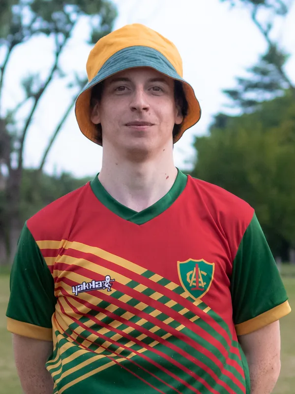
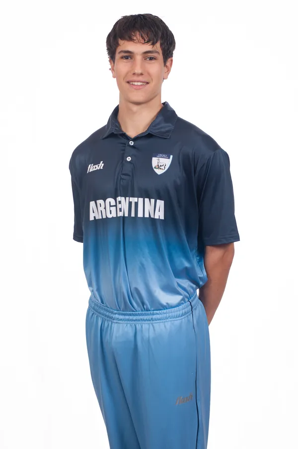
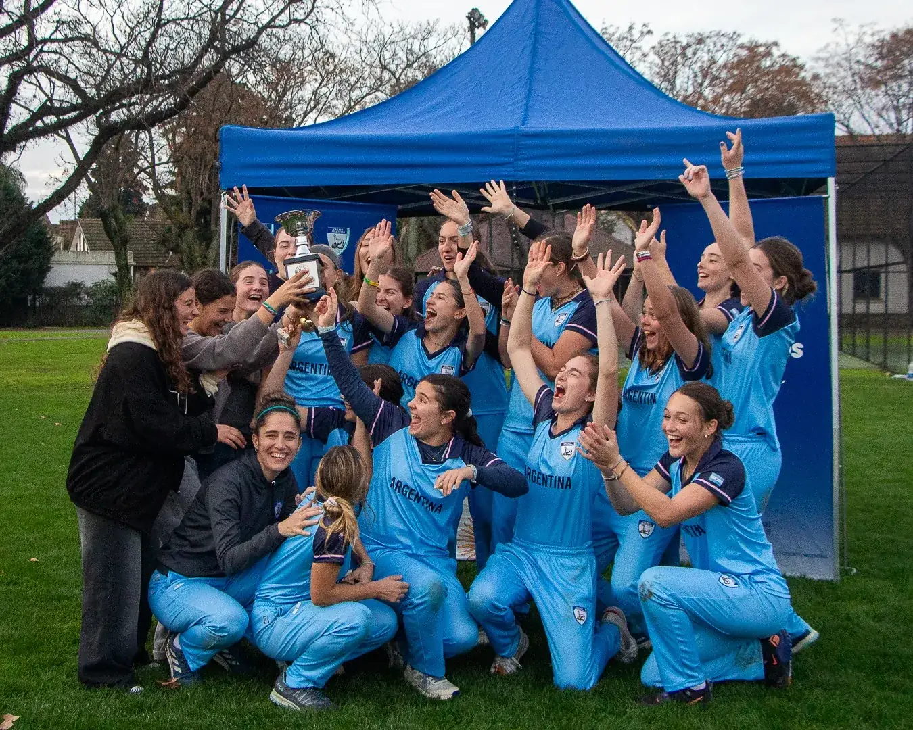
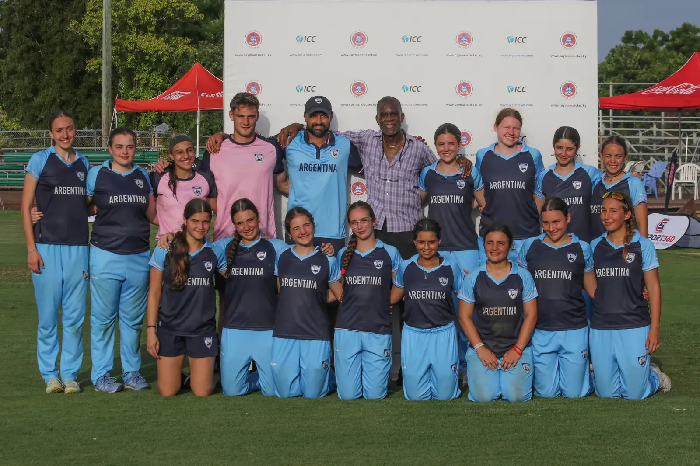
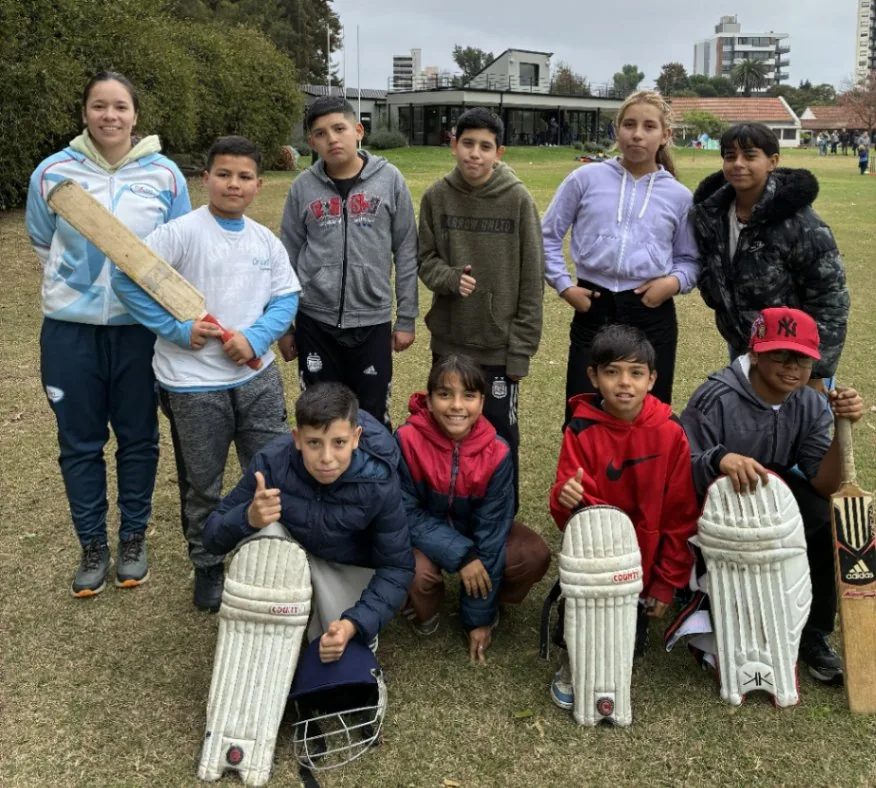
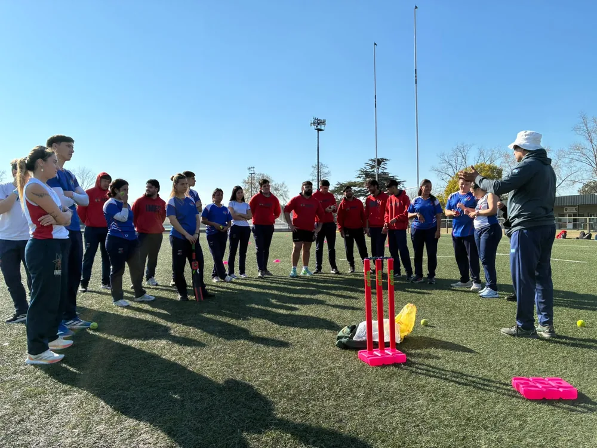

Temporada 2026/27
Fixture
Sábado 7 de noviembre
Domingo 8 de noviembre
Sábado 14 de noviembre
No hay partidos de esta competencia en las próximas fechas.
Norte y Sur 2026
Estadísticas completas
Líderes estadísticos

Carreras
83
Lautaro Musiani
Sur XI
Strike rate
160.00
Tomás Rossi
Norte XI
Wickets
5
Lucas Rossi
Norte XIJC
Economía
1.10
Juan Cabrera
Norte XI
El clásico del cricket argentino
Norte y Sur
Más de 125 ediciones enfrentando a los mejores jugadores del norte y del sur de Buenos Aires. Una tradición centenaria que reúne a los clubes, a las familias y a la historia del cricket en el país.
- 125.ª edición
- Belgrano AC, 2024
- 124.ª edición
- Club San Albano, 2023
- Formato
- Norte XI vs. Sur XI
Representando al país
Selecciones nacionales

Femenina mayorFlamingos
Campeonas de la serie ante México y protagonistas de la serie T20I con Canadá.

JuvenilesFemenina U19
Clasificatorio 2026 rumbo al Mundial juvenil.
Masculina mayorSelección masculina
El equipo que representa a la Argentina en los torneos de la ICC.


Desarrollo
Jugá cricket en la Argentina
Encuentros M9 y M12, clínicas abiertas y cursos de entrenadores con certificación de la ICC. Cualquier edad es buena para empezar.
- Infantiles y juveniles Encuentros M9‑M12 durante todo el año.
- Entrenadores Cursos de Coaching ICC Nivel 1.
- Clubes Más de seis sedes en Buenos Aires para entrenar y competir.
Clubes de la liga
- Hurlingham Club
- Belgrano Athletic
- Lomas Athletic
- San Albano
- Old Georgian
- SGSt George's Quilmes
Medios
Ver todos los álbumes
Galería de fotos
App oficial
El cricket argentino, en tu bolsillo
Resultados en vivo, marcadores bola a bola, estadísticas y fixture de todas las divisiones.